& Loom
we stopped asking the website to sell flooring.
Its first job was simpler: earn the sample. Then we built the brand, Shopify experience and lifecycle system around that first commitment.
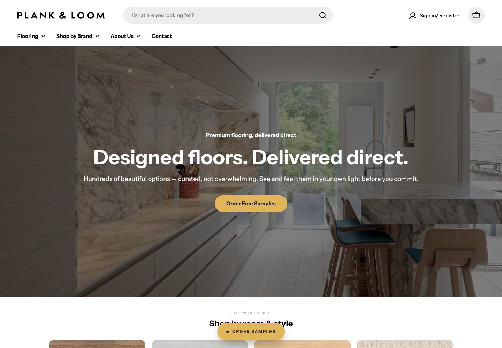
A $4,000 flooring sale was too much to ask of a first visit.
Make the sample the first conversion, then nurture the larger decision.
Brand, Shopify, catalogue system, email, SMS, retargeting and launch creative.
1,935 sessions, 24 orders and a 1.18% conversion rate.
a $4,000 flooring sale is too much to ask of a first visit.
S&R Flooring had thousands of SKUs across five manufacturers, dozens of near-identical colourways and product logic built for an experienced sales rep.
Online, that depth created choice paralysis. Products were priced by the box but measured by the square foot. Samples sat behind a phone call. Even a clear product page was still asking a new visitor to make a large, tactile purchase too soon.
A high-cost decision without enough confidence, context or time.
Let the customer see the material in their own light before making the larger decision.
make abundance feel edited.
The answer was not to hide the range. It was to give every colourway a consistent role, then let shoppers narrow by the things they recognize: colour, material, format and room.
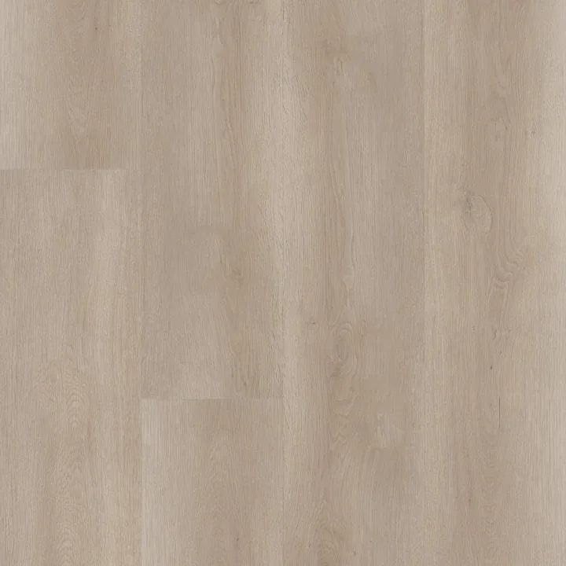
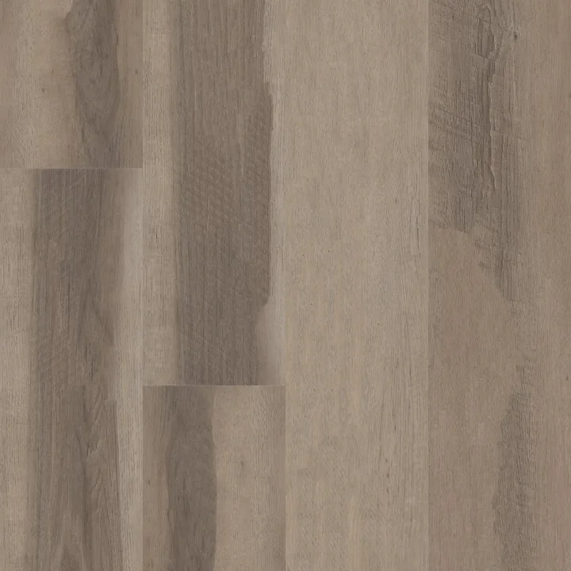
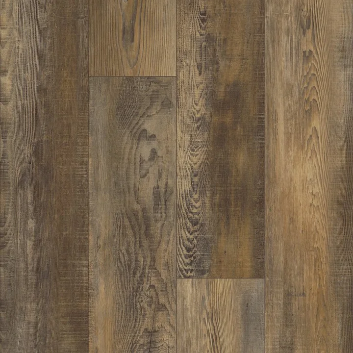
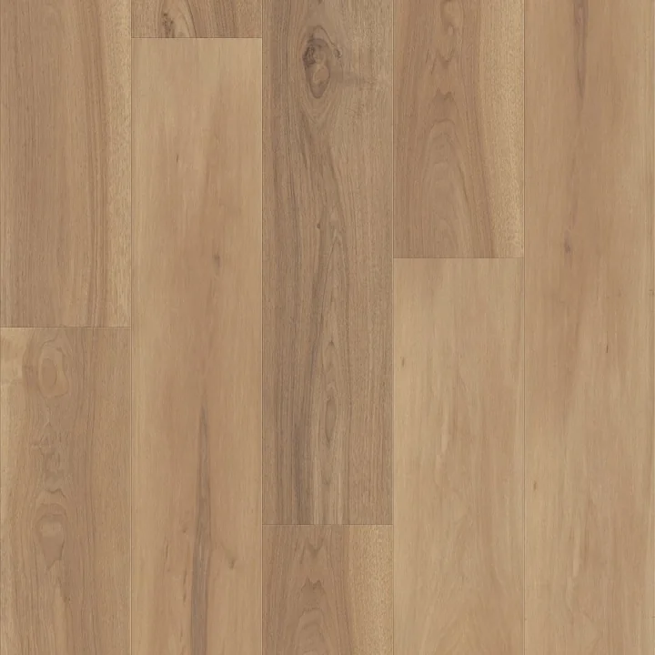
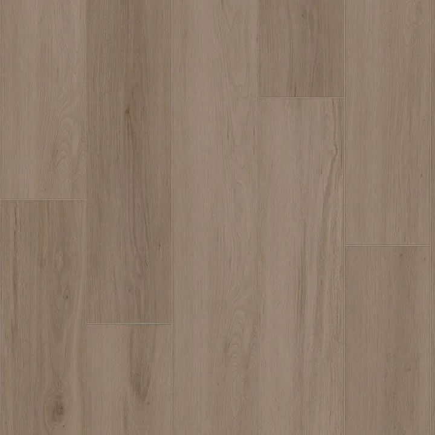
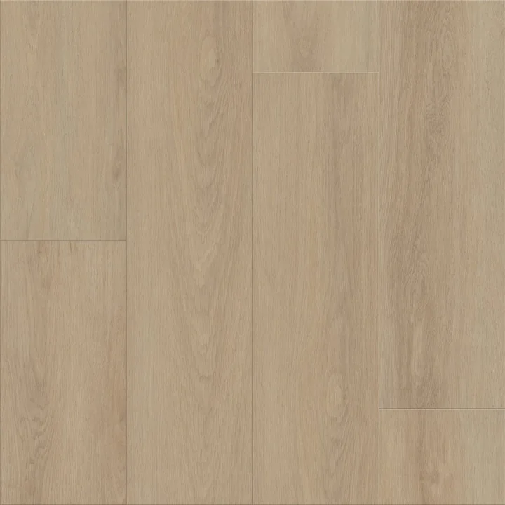
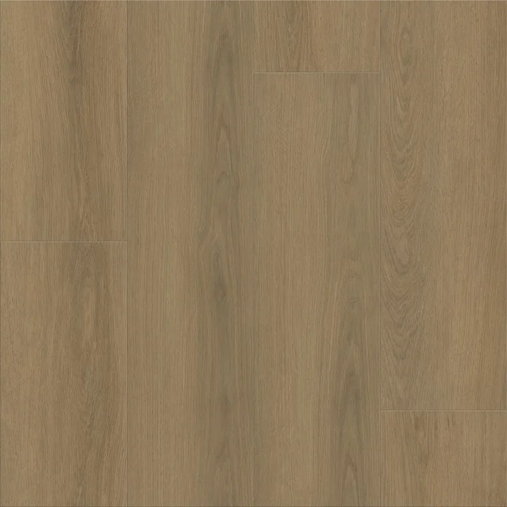
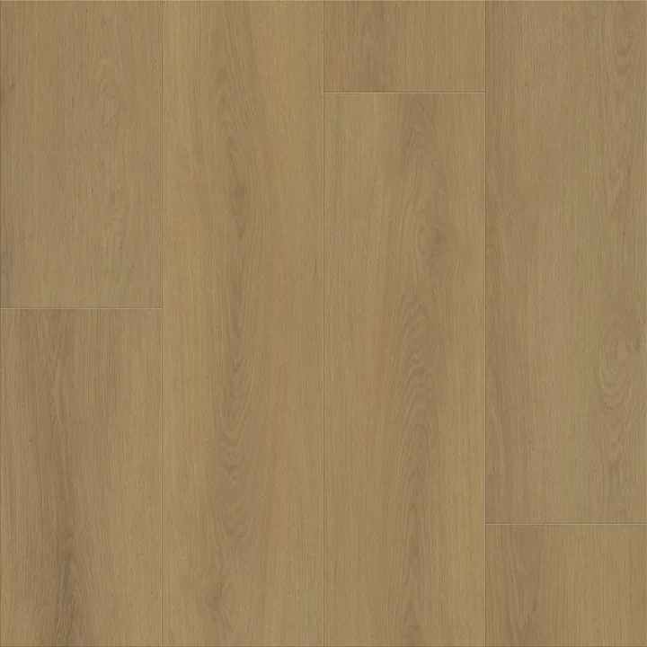
the sample became the conversion event.
The site did not need to close the full flooring sale on visit one. It needed to earn the smallest useful commitment, then give the rest of the system something qualified to work with.
Brand and launch creative bring in people actively considering new flooring.
The smallest useful commitment becomes easy, measurable and worth following up.
Education, reminders and product guidance support the decision at home.
Meta and Google bring the right products and proof back into view.
The qualified sample customer becomes the larger commercial opportunity.
stop guessing. start with a sample.
We repositioned S&R Flooring as Plank & Loom, then built one creative platform around the real conversion event: getting material into someone’s home.
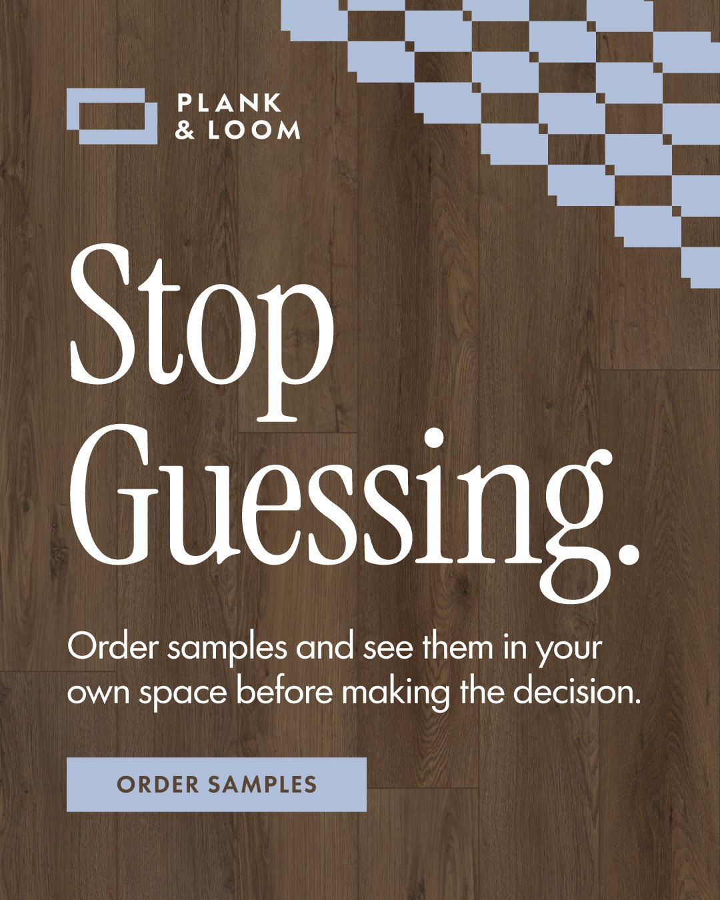
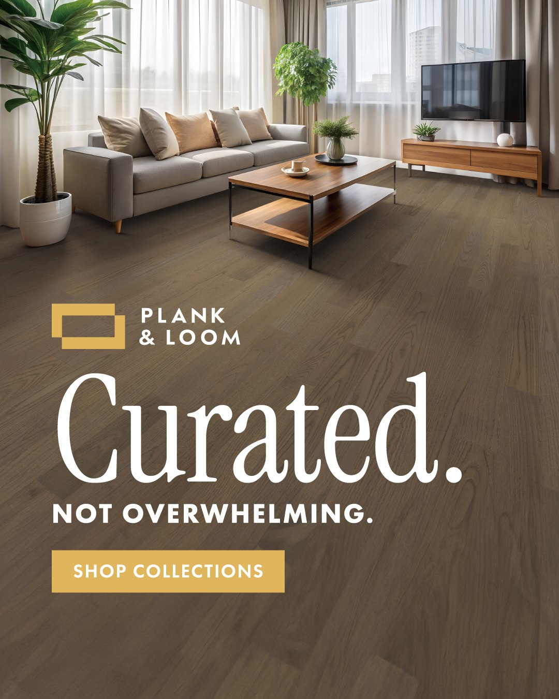
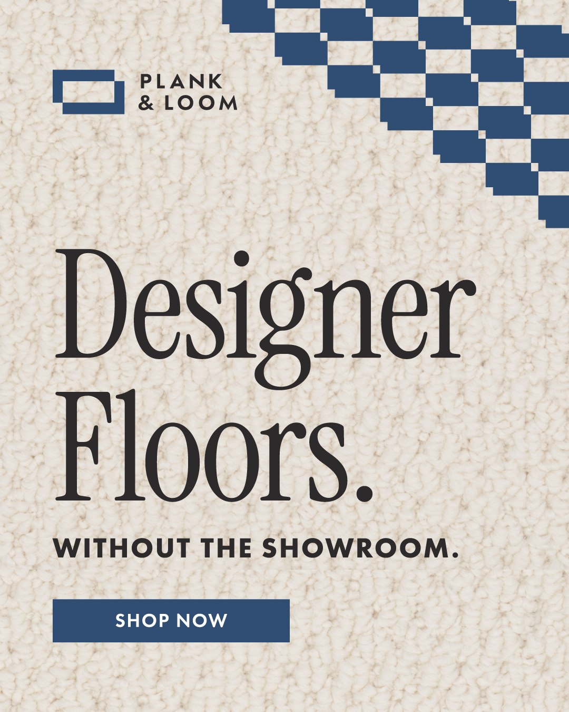
Curated. Direct. Calm. Confident. Useful.
the storefront shows the room. the product page does the math.
The live Shopify system moves from visual discovery to sample order to a technically correct purchase—without asking the customer to understand flooring operations first.
View live storefront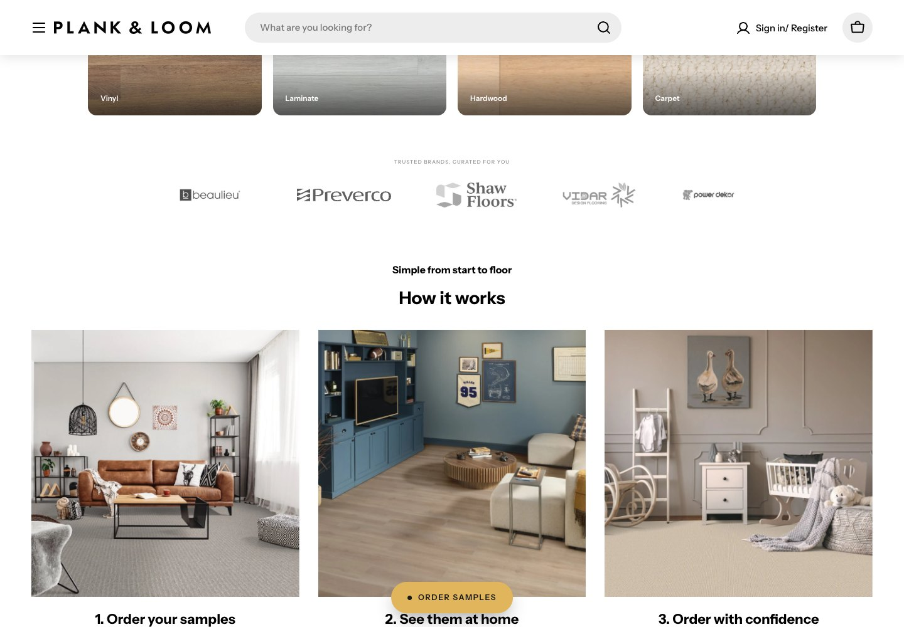
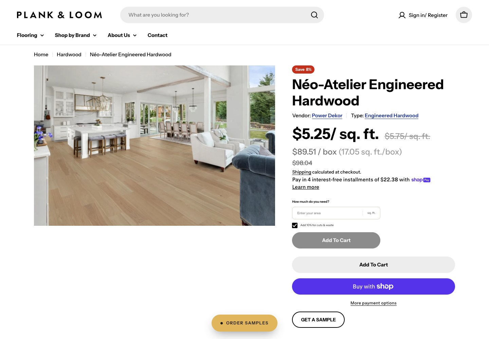
the site creates the lead. the follow-up keeps the decision moving.
People do not order a sample and immediately buy a full floor. The journey needed useful reasons to come back while the customer compared materials, rooms, budgets and timing.
Welcome, education, cart recovery and sample follow-up keep the journey moving after the visit.
Short reminders support a considered decision without turning it into a hard sell.
Meta and Google bring relevant products, proof and next steps back into view.
one brand on the surface. a lot of system underneath.
The visible experience only became simple because the catalogue, pricing and publishing logic behind it became disciplined.
Repositioned S&R Flooring as Plank & Loom and rebuilt the customer experience end to end.
Product lines assembled and published through the Shopify Admin API instead of weeks of manual entry.
Every relevant product communicates both per-box and per-square-foot cost.
Room area and waste allowance translate into the correct number of boxes before add to cart.
Colour families, material filters and grouped variants turn near-identical SKUs into clear choices.
Free samples, campaign creative, email and retargeting all work toward the same low-friction commitment.
Real spaces link inspiration directly to the flooring shown inside them.
Homepage, campaign system, six triggered email flows, SMS, retargeting and measurement built around the sample order.
a stronger month across traffic, orders and conversion.
Shopify’s latest 30-day view moved across all three leading indicators. It is directional momentum, not a controlled causal test.
Shopify analytics, Sep. 30–Oct. 30 versus Aug. 30–Sep. 29, 2026. The client’s 35–40% sample-to-sale figure remains a commercial target, not a reported achieved result.
the site earns the sample. the system carries it toward the sale.
fix the first conversionformerly S&R Flooring
Rebrand · commerce strategy · Shopify design + build · catalogue architecture · lifecycle marketing · CRO · launch
Shopify · Admin API · ecommerce operations